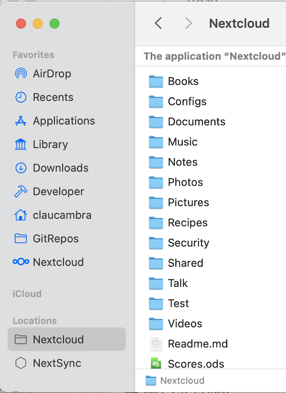

macOS Virtual Files-Client
Die virtuelle dateibasierte Synchronisierung für Nextcloud-Desktopbenutzer ist jetzt auf macOS verfügbar.
Anders als unter Windows wird die Unterstützung virtueller Dateien unter macOS durch eine separate Client-Version bereitgestellt. Dadurch können wir das bestmögliche Erlebnis für klassisch synchronisierte Dateien aufrechterhalten, einschließlich Synchronisierungsstatusintegration und Kontextmenüaktionen, für Benutzer, die diese Synchronisierungsmethode weiterhin verwenden möchten. Genau wie unser klassischer Synchronisierungsclient wird der virtuelle Dateiclient für macOS zusammen mit dem Desktopclient für Windows und Linux veröffentlicht und profitiert von regelmäßigen Fehlerbehebungen und Funktionsupdates, die das Benutzererlebnis verbessern.
Unterstützte Funktionen
Lokale Aufbewahrung und Räumung pro Datei
Intelligente lokale Kopierentfernung
Integration mit Spotlight
Dateivorschau im Finder für virtuelle Dateien
Unterstützung für Apple-spezifische Formate wie App-Bundles und iWork-(Pages, Numbers, Keynote)
Kompatibilität mit Remote-Dateisperren
Unterstützung für „Lokal bearbeiten“
Dateifreigabe mit anderen Benutzern
Automatische Synchronisierung von Remote-Änderungen
Mehr!
Bemerkung
Um die Remote-Änderungserkennung zu verbessern, empfehlen wir, die App notify_push auf Ihrem Nextcloud-Server zu aktivieren. Diese App benachrichtigt den Desktop-Client über Änderungen auf dem Server, sobald diese auftreten, und verkürzt so die Zeit, die der Client benötigt, um Änderungen zu erkennen. Dadurch entfällt auch die Notwendigkeit, dass der Desktop-Client den Server kontinuierlich nach Änderungen abfragt.
Installation und Ersteinrichtung
Der virtuelle Dateiclient wird als Installationspaket verteilt, das dem klassischen Synchronisierungsclient von macOS ähnelt. Der Desktopclient kann installiert werden, indem Sie die vom Installationsprogramm angegebenen Schritte befolgen.
Der virtuelle Datei-Desktop-Client ist mit dem klassischen Synchronisierungs-Desktop-Client austauschbar. Das bedeutet, dass Ihre bestehenden Konten und Einstellungen auf diesen Client übertragen werden und umgekehrt, falls Sie sich jemals entscheiden, zum klassischen Synchronisierungs-Client zurückzukehren. Dies schließt alle bereits vorhandenen Standard-Synchronisierungsordner ein, da der virtuelle Datei-Client auch die klassische Synchronisierung unterstützt.
Bemerkung
Aufgrund technischer Einschränkungen in macOS können wir keine Integration in Finder für klassische Synchronisierungsordner und virtuelle Dateisynchronisierungsordner bereitstellen. Klassische Synchronisierungsordner im virtuellen Dateiclient verfügen daher nicht über Finder-Integrationen wie Synchronisierungsstatussymbole oder Kontextmenüaktionen.
Bei allen bestehenden oder neu konfigurierten Konten werden virtuelle Dateien automatisch aktiviert. Unter macOS befinden sich die virtuellen Dateien jedes Kontos in einer eigenen Domäne, getrennt von allen bereits vorhandenen klassischen Synchronisierungsordnern. Diese Domänen sind in der Finder-Seitenleiste unter der Gruppe “Orte“ aufgeführt.
Beim ersten Zugriff auf eine dieser Domänen fordert der Desktop-Client Informationen zu Remotedateien vom Server an. Diese erste Synchronisierung kann je nach der Anzahl der auf dem Server gehosteten Dateien einige Zeit in Anspruch nehmen.
Finder-Integration
Der Client für virtuelle Dateien verfügt über verschiedene Finder-Integrationen, die eine tiefere und nativere Integration in den Dateibrowser von macOS ermöglichen als der klassische Synchronisierungsclient.
Sync-Statusanzeigen
Ähnlich wie der klassische Synchronisierungsclient zeigt der Client für virtuelle Dateien neben virtuellen Dateien Symbole an, die ihren Status angeben.
Wolke mit Pfeil: Element oder seine untergeordneten Elemente sind virtuell und stehen zur lokalen Aufbewahrung zur Verfügung
Wolke mit Umriss: Artikel ist lokal teilweise verfügbar
Kein Symbol: Artikel ist offline verfügbar
Kontextmenüaktionen
Wenn Sie bei gedrückter STRG-Taste, mit zwei Fingern oder mit der rechten Maustaste auf ein Finder-Element klicken, wird das Kontextmenü geöffnet. Darin finden Sie mehrere Einträge des virtuellen Dateiclients, mit denen Sie einige der von Nextcloud unterstützten Funktionen nutzen können. Dazu gehören:
Dateisperre (sofern vom Server unterstützt)

Dateifreigabe (sofern vom Server unterstützt)
Konfiguration
Einstellungen für virtuelle Dateien können für jedes Konto einzeln über das Einstellungsfenster des Nextcloud-Desktop-Clients angepasst werden.

Der Abschnitt virtuelle Dateien bietet eine Reihe von Optionen, die für die Interaktion mit virtuellen Dateien relevant sind:
Aktivieren/Deaktivieren virtueller Dateien für das Zielkonto
Schnelle Synchronisierung aktivieren/deaktivieren
Verwalten Sie die lokale Speichernutzung und entfernen Sie lokale Kopien
Erzwingen, dass die virtuelle Dateidomäne nach Updates sucht